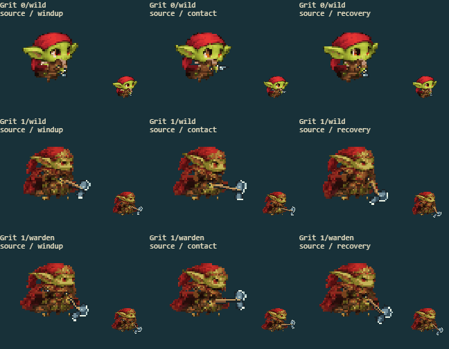
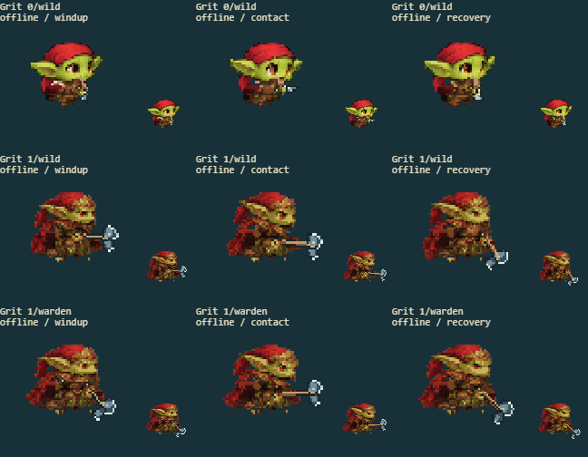

6 separate fights cover every available evolution/path in the source game and rebuilt offline game. The arena keeps combat effects. The other panels show the actual battle sprite at native and enlarged size, before the hit flash.
Full game screenshot · Contact
| Factor | Result | Observed |
|---|---|---|
| Underlying body coverage | pass | The evolved brown chest stays solid behind the extended blade arm and in the arm-hidden inspection. |
| Connected limbs without a stationary duplicate | pass | The small gold/green hand travels as one limb from its shoulder; the scarf remains behind it without a spare stationary sleeve. |
| Complete costume and palette | pass | Red scarf tails and full evolved cape remain continuous, including the bottom folds beside the moving forearm. |
| Hand?weapon attachment | pass | The blade shaft remains held at the same hand through forward contact and recovery; its identity does not change with the leg phase. |
| Silhouette and cell bounds | pass | Long ears, red head cloth, cape tips, boots and blade remain present at native and enlarged size. |
source

offline

All eight facings: art form 0 · art form 1 · art form 2